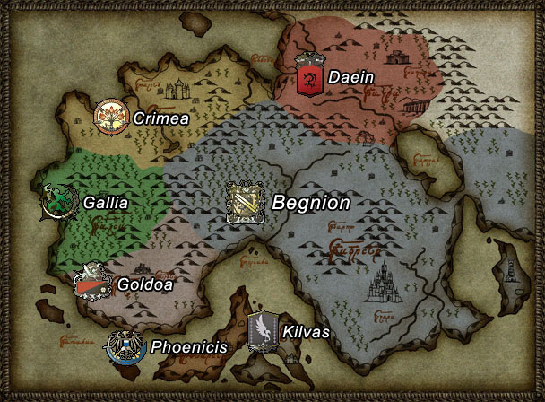
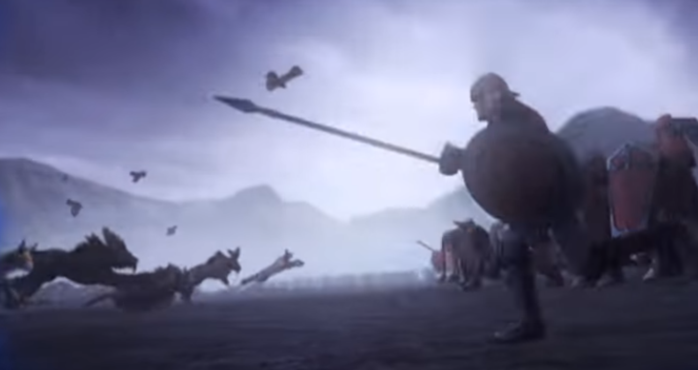
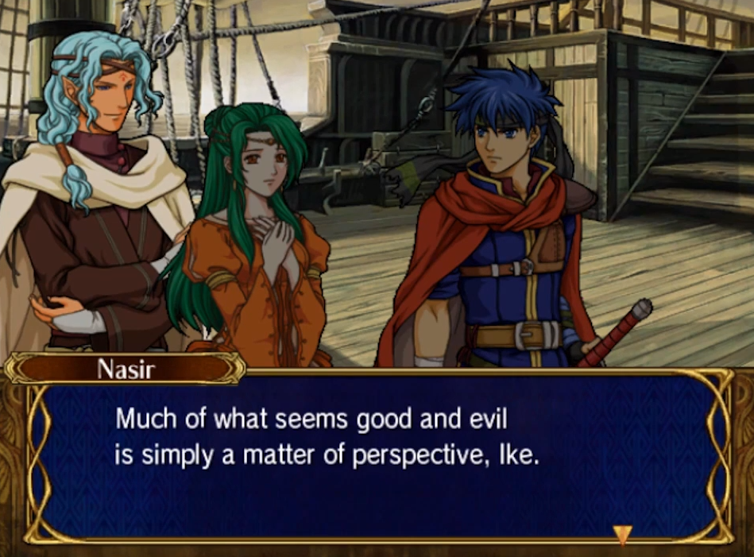

Video Games as Social Commentary
viewed through Fire Emblem: Path of Radiance and Radiant Dawn
Warning: Unsurprisingly, the content of this website contains major spoilers for Fire Emblem: Path of Radiance and Fire Emblem: Radiant Dawn.
Introduction
Can video games be a platform for social change? Unlike books and movies, video games today still carry the stigma of being purely for entertainment while other forms of media have been adapted to carry heavy themes to influence people’s opinions. A growing category of games, titled “Serious Games”, has been created to refer to any game whose primary purpose is something other than entertainment, but for a multitude of reasons, games of this genre have failed to gain traction outside of niche markets, limiting their influence on the larger gaming market. It can be argued, however, that Serious Games may have taken the wrong approach by sacrificing gameplay. A recent trend for video games focused purely on entertainment to deliver compelling storylines coupled with engaging gameplay has given shape to a new, albeit indirect, medium for hosting social commentary.
One example of a mainstream game that does this gameplay-commentary aspect very well are Fire Emblem: Path of Radiance (2005) and Fire Emblem: Radiant Dawn (2007), a surprising choice given the overall popularity of the series. The manner that these games combine story and gameplay elements creates a unique experience that does an excellent job both highlighting its serious themes and giving players incentive through the gameplay to think about them. The rest of the essay, thus, will first aim to provide more context around the uniqueness of story-focused video games in general before exploring the ways in which these two games convey their themes exceptionally well. These games will then serve as the focal point through which the impact and tradeoffs of the platform will be explored.
Why Video Games?
It often comes as a surprise to gamers when serious themes are covered in video games because the story is generally not the primary selling point of games, unlike books and movies. Yet, video games hold some untapped potential for conveying such heavy themes precisely because of this stigma. While books and movies have already been used for social commentary purposes in the past, people often do not expect the same of video games and as such may be subconsciously more open to hearing opinions different than their own. There is also the gameplay aspect, which, if used correctly, can be a stronger sway on people’s opinions than words can due to the natural emotional investment people have over effort put into a video game (Bogost 2008).
Understandably, heavy themes are rather difficult to integrate into most entertainment focused games due to the discrepancy between fun gameplay and serious themes. This situation has resulted in the creation of the “Serious Games” genre, a category that describes games where the primary focus is education rather than gameplay. One such example of a serious game would be a game designed to get players to write to Congress about policy changes (Swain 2007). While there would still be some gameplay elements to a game like this, it is clear that the emphasis is placed on teaching players how to contact local legislators while gameplay is reduced to being only a secondary goal. Players of these games have had generally a positive response pertaining to what they have learned. However, serious games have been unsuccessful at breaking past niche markets because of the widespread stigma that games should be primarily for entertainment.
Recent trends in game making have carved out a new market for games that, while still focused on gameplay, have started to sport compelling stories of their own as a complement. These story-centered games form a new medium for conveying heavy themes that was previously unseen elsewhere due to how these games can uniquely enhance traditional storytelling with integrated gameplay elements. Path of Radiance and Radiant Dawn are two games that fit into this category that use this dual plot and gameplay storytelling mechanism to great effect. The following sections will highlight some of the major themes of these games in order to illustrate the magnitude of themes that can be fit into such a game and shed light on how both the plot and gameplay combine to create this impactful experience.
Fire Emblem
At the surface level, Path of Radiance and Radiant Dawn are installments in Nintendo’s long running series of Fire Emblem strategy JRPGs. In all Fire Emblem games, players control an army of units, headed by the game’s main character, and fight through various maps by defeating the opposing army. Individual maps are framed in terms of a larger story that is usually focused around the main character fighting a war to repel evil invaders and changes between installments.
Both Path of Radiance and Radiant Dawn take place in the continent of Tellius, pictured above along with the names of all its countries. Path of Radiance follows Ike, the leader of a group of mercenaries who is tasked with defeating the evil King of Daein and restoring sovereignty to Crimea, which Daein had previously conquered. Radiant Dawn is set three years after Path of Radiance and deals with the general fallout resulting from Ike’s victory. The two main characters are Micaiah and Ike, shown below on the left and right, respectively. Micaiah is a fortune-teller from Daein who leads a resistance group fighting against the oppressive Begnion soldiers occupying Daein since their defeat. Ike retains his role from the previous game as a mercenary leader but does not enter the story until later.


These two games are exceptional in the way they seamlessly integrate social commentary themes with gameplay aspects. Two of the major themes, along with the ways they are explored through gameplay, are as follows:
Racism
Tellius is home to two main categories of sentient inhabitants: normal humans, referred to as Beorc, and shapeshifters who can transform between human-like and fully animal forms, referred to as Laguz. Beorc and Laguz have a long history of abusing each other. The mutual hatred between Beorc and Laguz is firmly ingrained in minds of Tellius civilians with mistreatments occurring in both directions, though it can be argued that Beorc have done worse to Laguz than the other way around. Laguz are referred to by most Beorc with the derogatory term of “sub-human”, and slavery was a widespread practice in the Beorc nation of Begnion. Perhaps the worst case of Laguz persecution is the Serenes Massacre, an event that marked the genocide of the peace-loving Heron Laguz by angry Begnion civilians. The incident first started when the ruler of Begnion was assassinated by an unknown party. The evil senators pinned the blame on the Herons, a lie that caught on with the civilians due to the ingrained distrust of Laguz. Motivated by their hatred, an angry mob of civilians then stormed Serenes Forest, home of the Herons, and burned it down, killing nearly the entire Heron population in the process. Outrage over this incident sparks a continent-wide war between Begnion and the Laguz nations in the later sections of Radiant Dawn.
These games make their stance on discrimination very clear. Both games frequently call attention to how absurd some of this discrimination is when those who are being racist clearly have not met any of the individuals they speak of before hating on them. Aside from racism getting built directly into the plot as part of world building, this message is also enforced by having players play as characters who oppose this mistreatment. Characters from both Micaiah’s and Ike’s parties comment frequently about how all races should be treated equally, as shown below. This serves a dual purpose: such statements are justified in game because truly accepting people like those characters are rare in universe, while the repetition also gives players a clear stance on what position they should be taking in the matter given the natural tendency to root for protagonists. The themes are readily applicable to the real world as well, given that racism really is just mistreatment and stereotyping based on superfluous characteristics.
Good versus Evil
Radiant Dawn is not the first game in the series to feature multiple protagonists, but it is the first game to have protagonists who end up fighting each other. This simple twist of perspective creates quite the predicament for the players. As a JRPG, Fire Emblem units gain levels and become stronger as they fight battles. It is common for players to form attachment to the units they use given the effort put into training them. But now the players, having at some point controlled both parties, face the moral dilemma of fighting against the very same units that they have helped train earlier in the game (Zagal 2009). This dilemma creates quite the impression on players, given the natural aversion to seeing efforts work against them.
The story makes the moral dilemma worse by describing, for both Micaiah’s and Ike’s factions, the other faction in an antagonistic way as shown above. Such a description surely makes sense in context, given that the two character’s armies are fighting one another. However, players would find it difficult to digest these portrayals given that they have seen both sides of the story and know that everyone involved is a reasonable person. This two sided disconnect then makes the line between good and evil difficult to pinpoint. While a definite evil party is established in Path of Radiance and the latter half of Radiant Dawn, a good portion of the game is spent fighting perfectly reasonable people who are forced to act on behalf of the evil party. The powerful aspect of the player’s omniscient perspective, then, is that the player can see that the motivations of both parties are entirely justified but then also observe the tragedies that can result from this lack of communication. From this experience, players learn that the same principles apply to real life conflicts as well – what is good and evil is entirely decided on perspective, and communicating these differences in opinion is essential to conflict resolution.
Analysis
Japan Connection
The premise of these games share many similarities with that of World War II. Both games feature a continent-wide war between nations, akin to how the real World Wars involved much of the countries around the world. The Serenes Massacre is portrayed as the culmination of the evils perpetuated by racism and is a thinly-veiled reference to the Holocaust. The events that led up to the massacre share many parallels with Fascism: the fascists were able to convince an entire population that it was acceptable to mistreat and kill an entire group of people just off of their religious beliefs, just like how the Begnion Senate was able to brainwash its civilians into committing genocide on a wholly innocent people. The references even go down as far as the reaction of the population after their unspeakable actions were called out – the Begnion citizens felt guilty after realizing that the Herons were innocent, but the deep-rooted distrust of Laguz prevented them from rising up against the Senators who have tricked them.
Understandably, both games take a strong stance against both racism and needless conflict and promotes peace across nations. This sort of theme is not unusual for Japanese games, which have been known in the past to reference recent events or tragedies. In particular, natural disasters and concerns about Japan’s declining birthrate were some of the most common themes (Whaley 2007). Antiwar themes are especially popular given the contrast between Japan’s pacifist foreign policy today and the ruthless military ambition of its past; the people of Japan today have realized the error of their ways and want to make sure that such ideas are called out for being the morally wrong ideas they are. Such themes are most common in JRPGs or visual novels, as the prominence of story enables these themes to be conveyed. Genres focused solely on gameplay, on the other hand, would have difficulty including these themes in a way that is presentable to the players.
Tradeoffs
While the ability to leverage gameplay to enhance the storytelling aspect of games works to great effect when done correctly, there are inherently risks that developers are taking when choosing to go with such an untraditional path. This risk is especially true when it comes to reception, particularly critic reviews. There is no doubt that ratings play an important part in game publicity. Unfortunately for story-centered games, story is just one of many attributes of the game the critic has to review such as gameplay, graphics, and novelty. Excellence in one field will not save the rating of a game if the rest of its attributes are mediocre.
Some of these risks are best understood by looking at the mixed reception of Path of Radiance and Radiant Dawn. Among fans of the Fire Emblem series, these two games are considered by many to be some of the best in the series in large part due to the games’ compelling storylines, good characterization, and exploration of heavy themes (Reddit 2018). While some fans found the themes to be too pushed, while others were really appreciative that the game developers were brave enough to explore sensitive topics in a video game story. The reception from official critic outlets was not so warm. While Path of Radiance managed to avoid major scrutiny due to being the first Fire Emblem game in years to be on a home console (the GameCube), Radiant Dawn got attacked for various things such as difficult gameplay, poor 3D graphics, and having no motion controls despite being a Wii game (Anderson 2007, Donahue 2007). Due to these reviews and a multitude of other factors, Radiant Dawn did not sell well at release. It was only after the Fire Emblem series enjoyed its surge of popularity in recent years that the game was more widely appreciated for the risks it takes regarding integrating commentary with engaging gameplay.
Conclusion
Building an entertaining game that also seamlessly incorporates heavy themes is not easy. Not only do the heavy themes have to integrate into the game in a way that does not detract from its overall enjoyableness, the developers must also fight against all the stigmas that are still associated with mainstream games that demand attention in peripheral attributes. Yet, as Path of Radiance and Radiant Dawn have shown, games that do this well can have a real impact on its players, both in terms of memorability and lessons that can be applied to real world scenarios. Video games are indeed at an interesting point of development right now as more and more people turn to them for that period of escape from the real world, but there is no rule that states that games cannot be both fun and informative at the same time. Perhaps it is the new platform that can be subtlety used to make the world a better place.
Works Cited
Anderson, Lark. “Fire Emblem: Radiant Dawn Review.” Gamespot, 14 Nov. 2007, web.archive.org/web/20080829204949/http://uk.gamespot.com/wii/rpg/fireemblem/review.html.
Bogost, Ian. "The rhetoric of video games." The ecology of games: Connecting youth, games, and learning (2008): 117-140.
Breuer, Johannes S., and Gary Bente. "Why so serious? On the relation of serious games and learning." Eludamos. Journal for computer game culture 4.1 (2010): 7-24.
Donahoe, Michael. “Fire Emblem: Radiant Dawn.” 1up.Com, 6 Nov. 2007, web.archive.org/web/20160528075632/http://www.1up.com/reviews/fire-emblem-rd.
God_of_Cocaine, "Anybody want to talk about Radiant Dawn?" Reddit, 16 Mar 2016, https://www.reddit.com/r/fireemblem/comments/4apey4/anybody_want_to_talk_about_radiant_dawn/
Goto-Jones, Chris. "Playing with Being in Digital Asia: Gamic Orientalism and the Virtual Dōjō." Asiascape: Digital Asia 2.1-2 (2015): 20-56.
"I hate to ask this but... (Radiant Dawn Spoilers)" Reddit, 15 July 2015, www.reddit.com/r/fireemblem/comments/3eutv9/i_hate_to_ask_this_but_radiant_dawn_spoilers/
Swain, Chris. "Designing Games to Effect Social Change." DiGRA Conference. 2007.
Zagal, José Pablo. "Ethically Notable Videogames: Moral Dilemmas and Gameplay." DiGRA Conference. 2009.